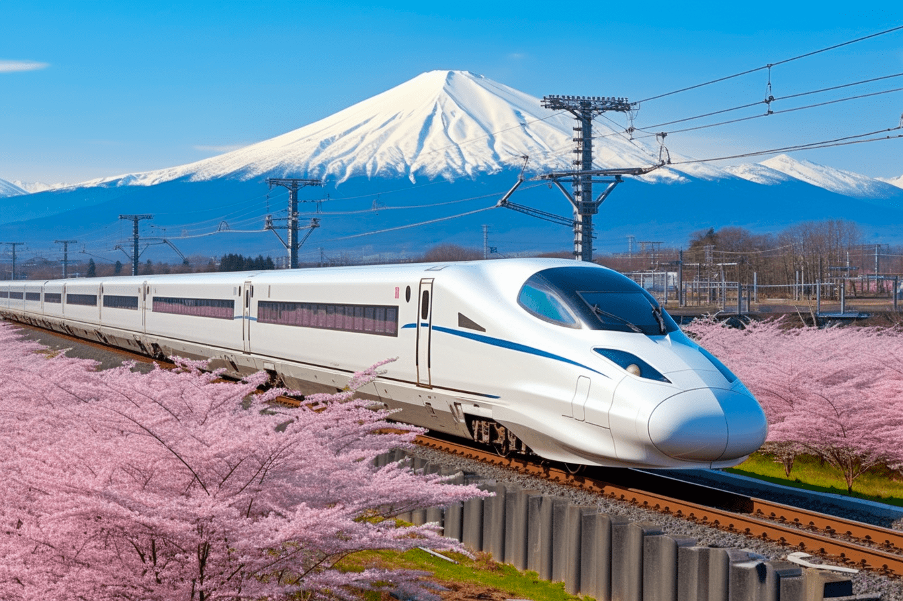
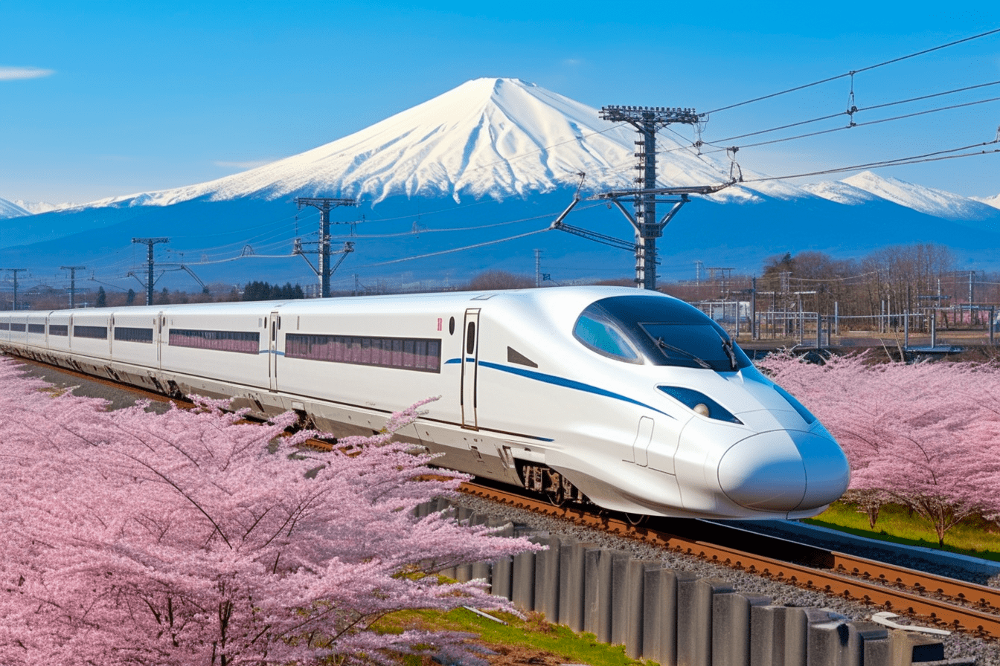
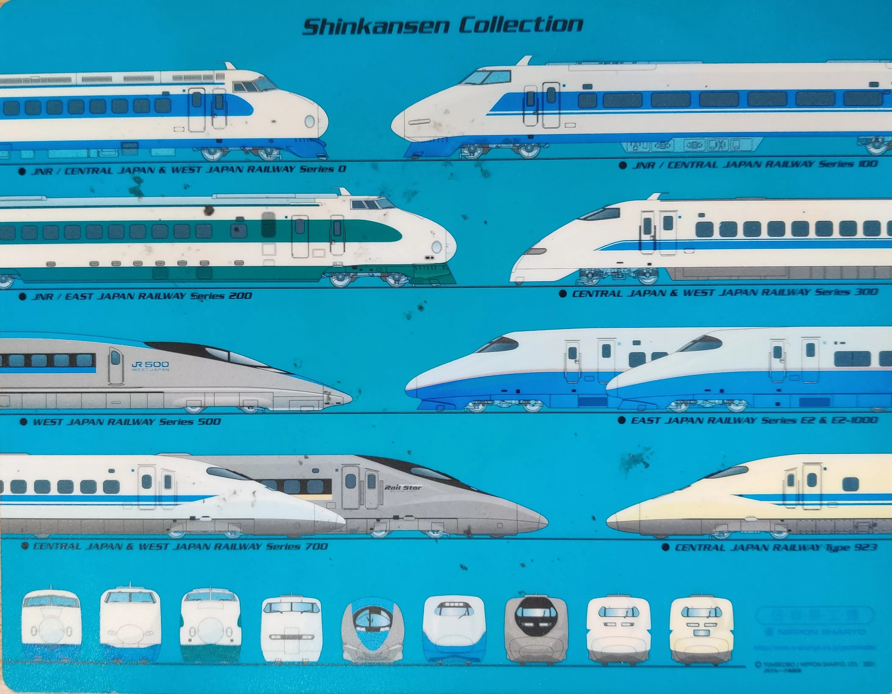
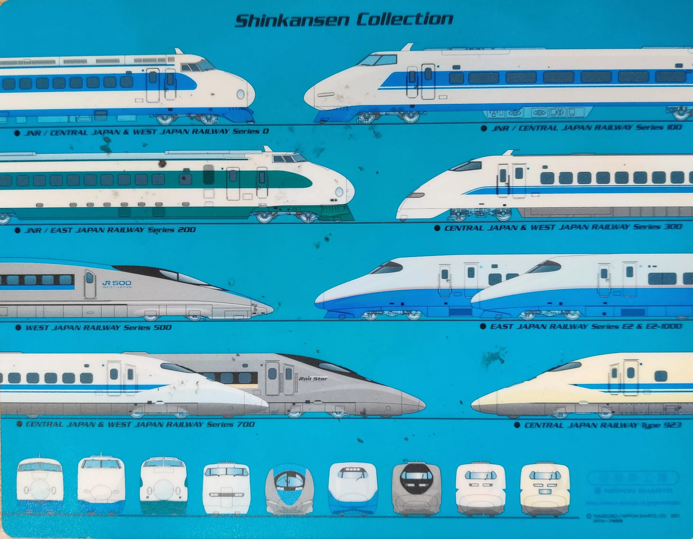

Maglev Train: Shanghai Maglev
The Shanghai Maglev Train, launched in 2004, is the world’s first commercially operated magnetic levitation (maglev) train, setting a new standard for high-speed rail innovation. Connecting Shanghai Pudong International Airport to Longyang Road Station, this 30-kilometer journey takes only seven minutes, reaching speeds up to 430 km/h (267 mph). This makes the maglev one of the fastest trains in the world, a true milestone in advanced transportation that combines unprecedented speed with cutting-edge design, illustrating China's dedication to leading global innovation in high-speed rail.
Shinkansen (Bullet Train)
Types of Shinkansen trains
 

What is so Interesting About this Train?
Maglev technology is what gives the Shanghai Maglev its remarkable edge over traditional rail systems, relying on powerful electromagnetic forces rather than wheels and tracks. Superconducting magnets allow the train to float just above the track, drastically reducing friction. This setup enables smoother, quieter rides while preserving the track’s longevity due to minimal wear and tear. Unlike traditional trains that rely on mechanical contact, the maglev’s hovering mechanism provides an almost frictionless experience, paving the way for high efficiency and exceptionally low maintenance needs.


"Shinkansen Train" by Ben Dover Naw
Japan's Shinkansen Train E5
The Shanghai Maglev Revolution
The Shanghai Maglev’s interior is designed to balance speed with passenger comfort, offering a quiet, spacious cabin where passengers can enjoy ergonomic seating and panoramic windows. The cabin’s modern, streamlined design and reduced noise level create a calm, comfortable environment, allowing passengers to experience the thrill of high-speed travel without typical train vibrations. The maglev provides a refined experience, catering to both daily commuters and international tourists who want to witness the seamless blend of technology and comfort that defines this revolutionary transit system.


The "Hello Kitty" Shinkansen Train in Japan
Example of an E7 Shinkansen Train
What is the Shinkansen Train Network (STN)?
The Shanghai Maglev stands as a significant step toward eco-friendly transit, reducing emissions compared to conventional transportation options like cars or short-haul flights. Its energy-efficient magnetic levitation system supports China’s broader sustainability goals by offering a cleaner alternative to traditional travel modes. Internationally, the Shanghai Maglev has become a model for future maglev projects, inspiring countries such as Japan and Germany to explore similar systems. This pioneering technology underscores a global shift toward efficient, high-speed, and environmentally responsible rail networks, potentially connecting distant cities and redefining urban transit worldwide.
 

Shinkansen Trains Grouped by Their Tips